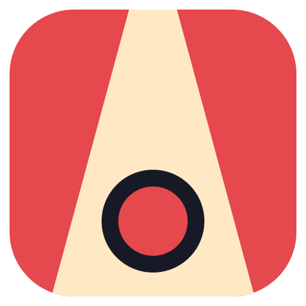
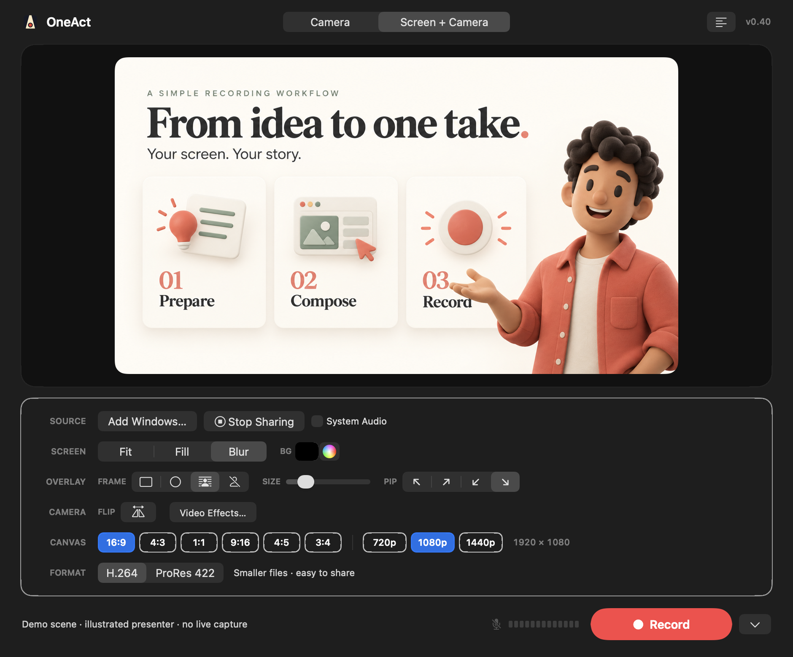

OneActA native macOS recorder that composites your screen and camera in real time.
Person cutout · Built-in teleprompter · Everything stays on your Mac
See the release notes for signing status and installation instructions. Unzip the download and move OneAct to Applications.
Release notes & checksums
ScreenCaptureKit captures a display, app, or window; your camera overlays as picture-in-picture. What you see is exactly what you record.
Rectangle, Circle, or Cutout overlay styles. Cutout uses Vision person segmentation to lift you out of the background, frame by frame.
Edit your script above the preview canvas, scroll at your speaking pace, and start with a countdown. The script stays out of OneAct's composited video.
Landscape or portrait ratios, Fit / Fill / Blur layouts, any canvas color. Drag the picture-in-picture wherever you want it.
Recording and compositing happen entirely on your Mac. No account, no cloud, no waiting for uploads.
Use H.264 for compact everyday recordings, or ProRes 422 for editing. Both save a MOV file with AAC audio, with pause and resume built in.